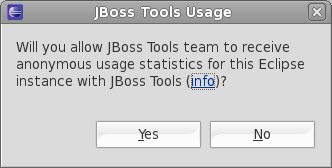
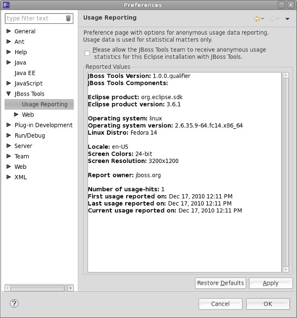

Since medio August 2010 JBoss Tools 3.2 builds now provides a “Usage” plugin which when installed and enabled will help us gather anonymous statistics about how the JBoss Tools plugins are being used.
All the data is gathered anonymously and can at any time be disabled if you wish.
What will we use the data for
With this enabled we can start seeing better how and where JBoss Tools is being used; we are especially currently interested in seeing what OS’s are being used, what screen resolution and how often users starts their workspace.
Over time we hope to learn more to help continuously improve JBoss Tools.
How to enable/disable usage tracking
If you have the plugin installed, then on the first start of this Eclipse a dialog will pop up asking you to send anonymous usage statistics.

If you do not want to send anonymous usage statistics, uncheck the checkbox and press Ok.
If you press Cancel, no usage statistics will be collected but the dialog will ask again on next startup.
If you just press Ok then usage statistics for JBoss Tools is enabled.
If you later on decide to not send statistics anymore or want to enable it, simply goto the Preferences JBoss Tools > JBoss Usage Reporting Preferences.

How it works
When the user has enabled reporting anonymous statistics the plugin uses Google Analytics to track data as though you visited a page under http://jboss.org/tools/usage/.
The information collected is similar/equal to what is possible to collect when you visit a website, including your IP address, and may be transferred to the United States and other countries.
We do tweak a few things to track more Eclipse oriented things; i.e. instead of Browser name we use the Eclipse product ID and instead of Browser version we use the version of the product or if not present the version of Eclipse core runtime plugin.
We also generate a random id for the installation so multiple startups from the same eclipse only count as one usage.
Currently the only tracking we do is when a workspace starts up with the plugin installed. We might add more reporting in the future, if so this page will be updated with details.
If you want to inspect the source code for all of the above it can be found here.